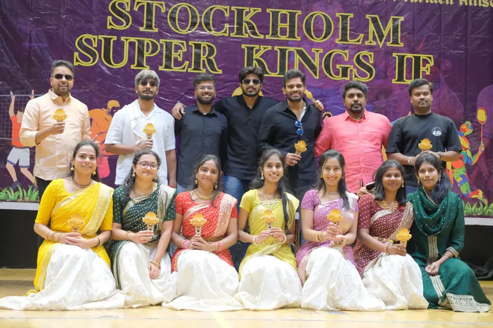
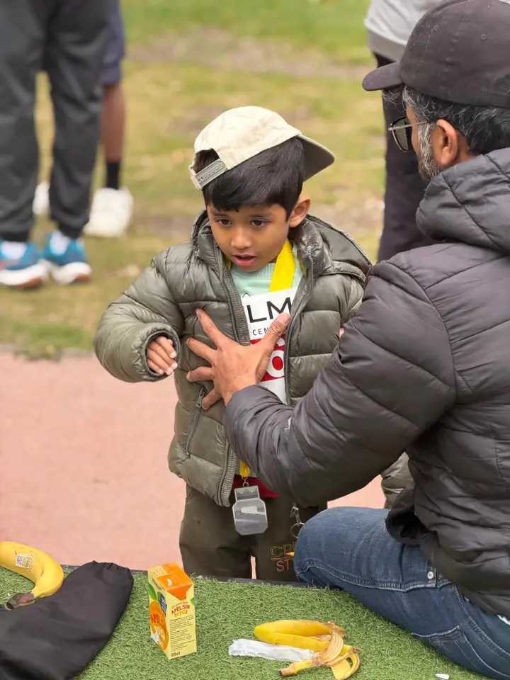
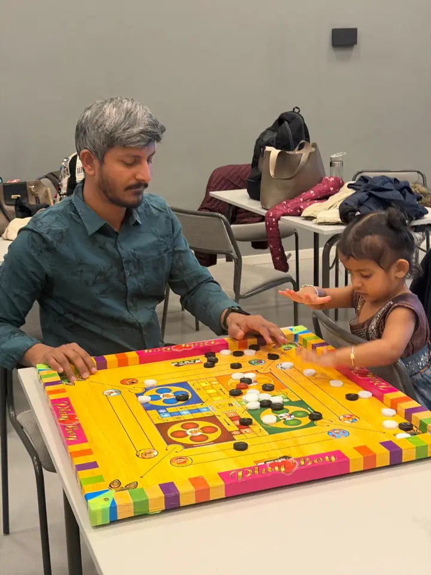
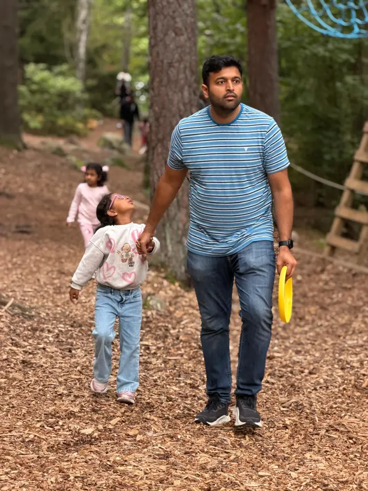
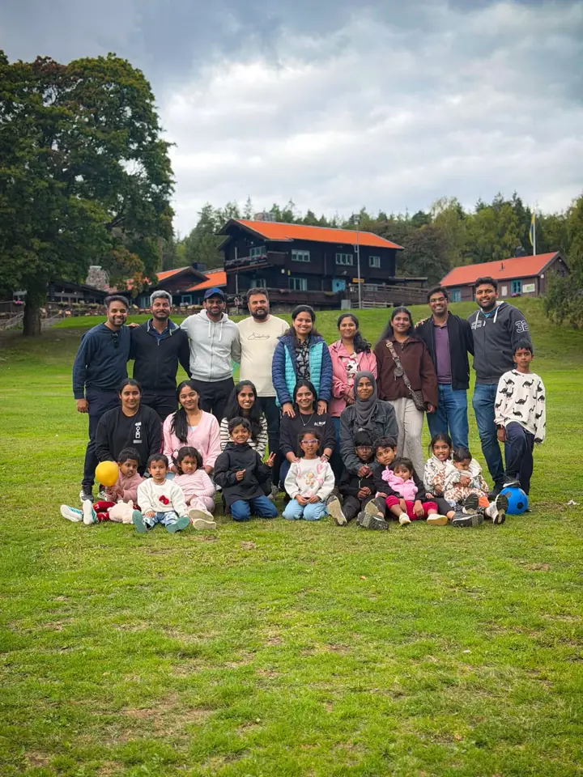

Stockholm Tamil Kultur & IF
Culture, sport and community in Stockholm
Scroll to climb
Skip to the summitதமிழால் இணைவோம்.
ஒன்றாக வளர்வோம்.
Connected through Tamil.
Growing together.
STK IF is a Tamil cultural and sports club taking shape in Stockholm, bringing together culture, sport and community for every generation.

Culture
Music, dance and Tamil language — for children, youth and adults.

Sports
Cricket, badminton, basketball, and more — for children, youth and adults.

Youth
Learn, Create, and Share — for children, youth and adults.

Family
Outdoor days and celebrations across generations.

Community
Swedish–Tamil exchange for newcomers, volunteers and everyone.
Climb with us
We bring people together through Culture, Sports, Youth, Family, and Community. Every generation and background is welcome; you do not need to speak Tamil to take part.

Next event
SSK IF Diwali
Nov 7. 11:00-16:00